#Removing previous datasets in memory
rm(list = ls())
#Loading the relevant libraries
library(ggplot2)
library(gridExtra)
library(dplyr)
library(BSDA)Lab 6: Statistics
Z-Tests, Z-Scores, and the Standard Normal Distribution
1 Intro
In this lab, we learn about Z-tests, standardization, and z-scores.
2 Z-Tests
We learned from the lecture that Z-tests evaluate if the averages of two datasets are different from each other when standard deviation or variance is known. The sample size typically should be larger than 30. To illustrate how Z-tests work, let us go back to the sample of Latin American countries and compare them to the world.
2.1 Loading the Data
Let us go back to the old Life Expectancy dataset. If you don’t have it anymore, you can download them from the following links:
Let us re-examine the distribution of our life expectancy dataset by making a histogram. We need to first load the data:
#Setting path
setwd("/Users/bgpopescu/Dropbox/john_cabot/teaching/stats/lab6/")
#Step1: Loading the data
life_expectancy <- read.csv(file = './life-expectancy.csv')2.2 Cleaning the Data
In the next few line we average life expectancy over country (the oiriginal dataset is a panel - with countries and years). This means that we are getting rid of the time component.
#Step1: Calculating the mean
life_expectancy2<-life_expectancy%>%
group_by(Code, Entity)%>%
summarize(life_expectancy=mean(Life.expectancy.at.birth..historical.))
#Step2: Cleaning the Data
weird_labels <- c("OWID_KOS", "OWID_WRL", "")
clean_countries<-subset(life_expectancy2, !(Code %in% weird_labels))
#Step3: Calculating the mean and SD in the dataset
mean_empirical<-mean(clean_countries$life_expectancy, na.rm = T)
mean_empirical_val<-as.character(round(mean_empirical, 0))
sd_empirical<-sd(clean_countries$life_expectancy, na.rm = T)
sd_empirical_val<-as.character(round(sd(clean_countries$life_expectancy, na.rm = T), 2))2.3 Inspecting the data
Let us inspect the first 10 entries.
head(clean_countries, n=10)# A tibble: 10 × 3
# Groups: Code [10]
Code Entity life_expectancy
<chr> <chr> <dbl>
1 ABW Aruba 70.3
2 AFG Afghanistan 45.4
3 AGO Angola 45.1
4 AIA Anguilla 69.4
5 ALB Albania 68.3
6 AND Andorra 77.0
7 ARE United Arab Emirates 66.1
8 ARG Argentina 65.4
9 ARM Armenia 67.2
10 ASM American Samoa 68.62.4 Sorting the dataframe in the order of life_expectancy
Let us now order our dataset based on life expectancy.
clean_countries_sorted<-clean_countries[order(-clean_countries$life_expectancy),]
head(clean_countries_sorted, n=10)# A tibble: 10 × 3
# Groups: Code [10]
Code Entity life_expectancy
<chr> <chr> <dbl>
1 MCO Monaco 77.3
2 AND Andorra 77.0
3 SMR San Marino 76.9
4 GGY Guernsey 76.7
5 ISR Israel 75.5
6 VAT Vatican 75.3
7 HKG Hong Kong 75.3
8 JEY Jersey 75.2
9 NZL New Zealand 75.1
10 GIB Gibraltar 75.02.5 Make a barplot for the first 10 countries
Let us now make a barplot where life expectancy is ordered from highest to lowest.
figure_1<-ggplot(clean_countries, aes(x = reorder(Entity, -life_expectancy), y = life_expectancy)) +
geom_bar(position = "dodge", stat="identity")
figure_1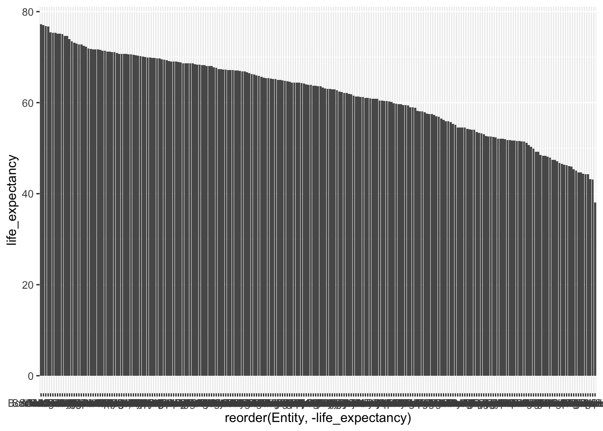
Okay, this looks pretty bad. Let’s focus on the first 10 countries.
life_exp_top10<-head(clean_countries[order(clean_countries$life_expectancy, rev(clean_countries$life_expectancy), decreasing = TRUE), ], n=10)
life_exp_top10# A tibble: 10 × 3
# Groups: Code [10]
Code Entity life_expectancy
<chr> <chr> <dbl>
1 MCO Monaco 77.3
2 AND Andorra 77.0
3 SMR San Marino 76.9
4 GGY Guernsey 76.7
5 ISR Israel 75.5
6 VAT Vatican 75.3
7 HKG Hong Kong 75.3
8 JEY Jersey 75.2
9 NZL New Zealand 75.1
10 GIB Gibraltar 75.0figure_1<-ggplot(life_exp_top10, aes(x = reorder(Entity, -life_expectancy), y = life_expectancy)) +
geom_bar(position = "dodge", stat="identity")+
theme_bw()
figure_1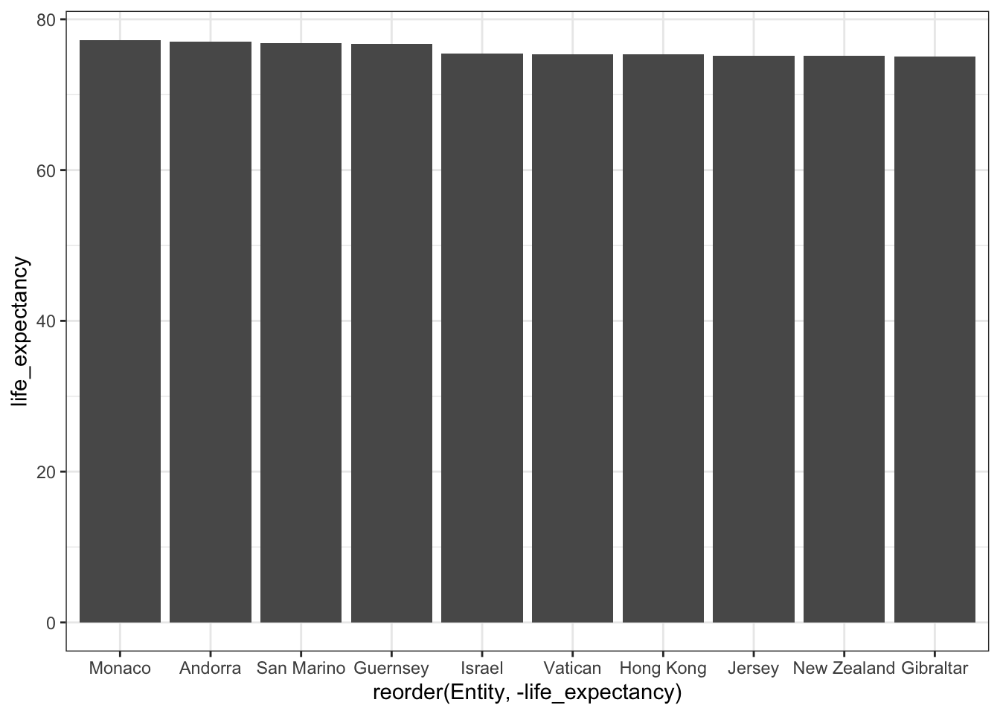
This looks a bit better. Let’s improve how this graph looks by adding labels for x and y.
figure_1<-ggplot(life_exp_top10, aes(x = reorder(Entity, -life_expectancy), y = life_expectancy)) +
geom_bar(position = "dodge", stat="identity")+
theme_bw()+
xlab("Country") + ylab("Life Expectancy")
figure_1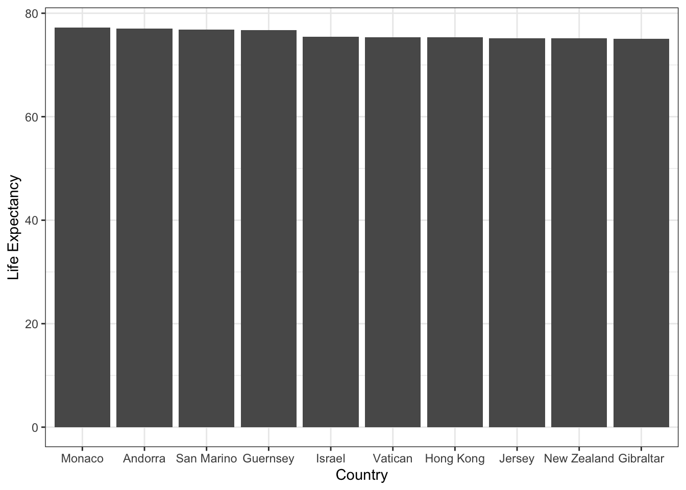
Let us also start the x-axis at 60 to get the differences to be more visible.
figure_1<-ggplot(life_exp_top10, aes(x = reorder(Entity, -life_expectancy), y = life_expectancy)) +
geom_bar(position = "dodge", stat="identity")+
theme_bw()+
xlab("Country") + ylab("Life Expectancy")+
scale_y_continuous(breaks=seq(60, 90, by = 10), limits = c(60,90))
figure_1Warning: Removed 10 rows containing missing values (`geom_bar()`).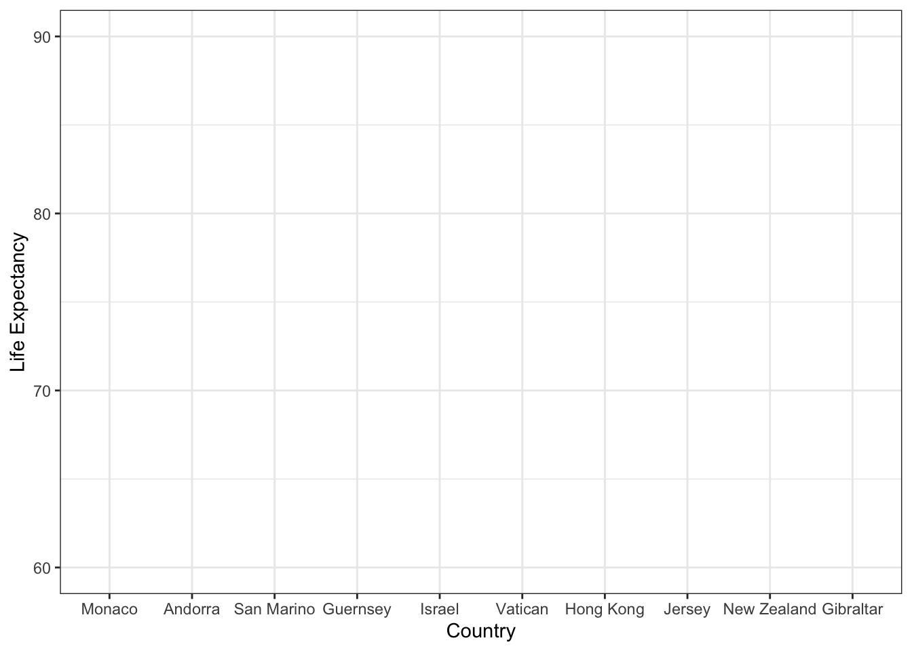
The scale_y_continuous cuts the bars. The fix is to use coord_cartesian.
figure_1<-ggplot(life_exp_top10, aes(x = reorder(Entity, -life_expectancy), y = life_expectancy)) +
geom_bar(position = "dodge", stat="identity")+
theme_bw()+
xlab("Country") + ylab("Life Expectancy")+
coord_cartesian(ylim = c(60,80))
figure_1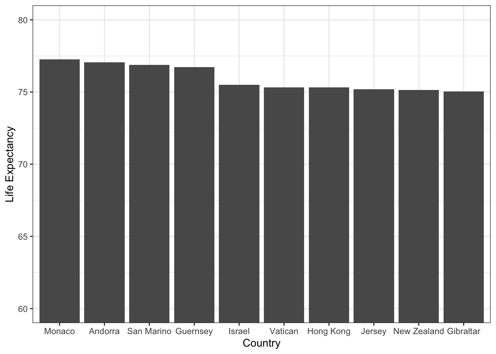
This is better. We can be even more precise by adding age on top of the bars. To do that, we first need to add this variable in our dataframe.
life_exp_top10$life_expectancy[2][1] 77.04861round(life_exp_top10$life_expectancy[2], 3)[1] 77.049life_exp_top10$life_expectancy_chr<-paste("Age: ", as.character(round(life_exp_top10$life_expectancy, 2)))
head(life_exp_top10, n=10)# A tibble: 10 × 4
# Groups: Code [10]
Code Entity life_expectancy life_expectancy_chr
<chr> <chr> <dbl> <chr>
1 MCO Monaco 77.3 Age: 77.25
2 AND Andorra 77.0 Age: 77.05
3 SMR San Marino 76.9 Age: 76.88
4 GGY Guernsey 76.7 Age: 76.72
5 ISR Israel 75.5 Age: 75.5
6 VAT Vatican 75.3 Age: 75.33
7 HKG Hong Kong 75.3 Age: 75.33
8 JEY Jersey 75.2 Age: 75.2
9 NZL New Zealand 75.1 Age: 75.13
10 GIB Gibraltar 75.0 Age: 75.04 This looks good. Let us add this information on top of the bars.
figure_1<-ggplot(life_exp_top10, aes(x = reorder(Entity, -life_expectancy), y = life_expectancy)) +
geom_bar(position = "dodge", stat="identity")+
theme_bw()+
xlab("Country") + ylab("Life Expectancy")+
coord_cartesian(ylim = c(60,80))+
geom_text(data=life_exp_top10,
aes(label = life_expectancy_chr, y = life_expectancy,
vjust = -1), colour = "red", size=3)
figure_1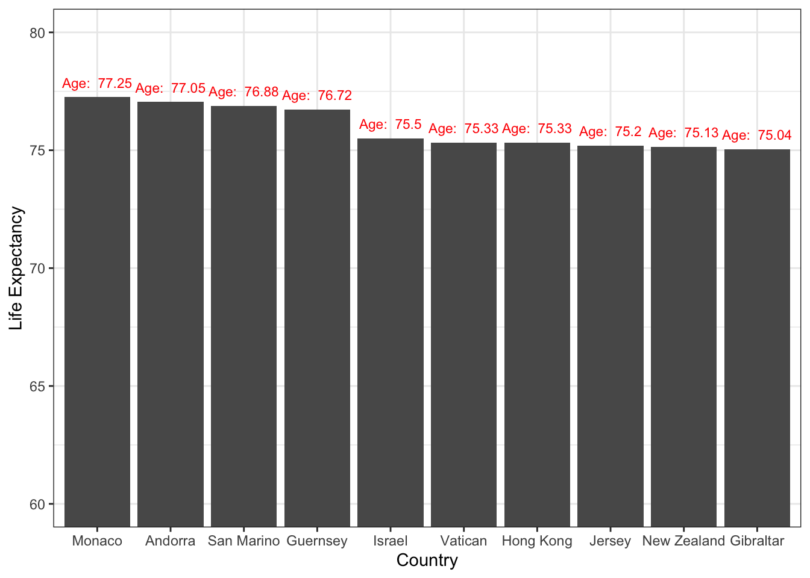
Let us now mark the countries that are physically in Europe with blue. These countries are: Monaco, Andorra, San Marino, Guernsey, Vatican, Jersey, and Gibraltar. We first create a list with all these countries.
list_european_ctry<-c("Monaco", "Andorra", "San Marino", "Guernsey", "Vatican", "Jersey", "Gibraltar")
list_european_ctry[1] "Monaco" "Andorra" "San Marino" "Guernsey" "Vatican"
[6] "Jersey" "Gibraltar" life_exp_top10$european<-NA
life_exp_top10$european<-"No"
life_exp_top10$european[life_exp_top10$Entity %in% list_european_ctry]<-"Yes"
head(life_exp_top10, n=10)# A tibble: 10 × 5
# Groups: Code [10]
Code Entity life_expectancy life_expectancy_chr european
<chr> <chr> <dbl> <chr> <chr>
1 MCO Monaco 77.3 Age: 77.25 Yes
2 AND Andorra 77.0 Age: 77.05 Yes
3 SMR San Marino 76.9 Age: 76.88 Yes
4 GGY Guernsey 76.7 Age: 76.72 Yes
5 ISR Israel 75.5 Age: 75.5 No
6 VAT Vatican 75.3 Age: 75.33 Yes
7 HKG Hong Kong 75.3 Age: 75.33 No
8 JEY Jersey 75.2 Age: 75.2 Yes
9 NZL New Zealand 75.1 Age: 75.13 No
10 GIB Gibraltar 75.0 Age: 75.04 Yes Let us now mark the European countries in blue and the rest grey.
figure_1<-ggplot(life_exp_top10, aes(x = reorder(Entity, -life_expectancy), y = life_expectancy, fill=european)) +
geom_bar(position = "dodge", stat="identity")+
theme_bw()+
xlab("Country") + ylab("Life Expectancy")+
coord_cartesian(ylim = c(60,80))+
geom_text(data=life_exp_top10,
aes(label = life_expectancy_chr, y = life_expectancy,
vjust = -1), colour = "red", size=3)+
scale_fill_manual(values = c("grey40", "blue"))
figure_1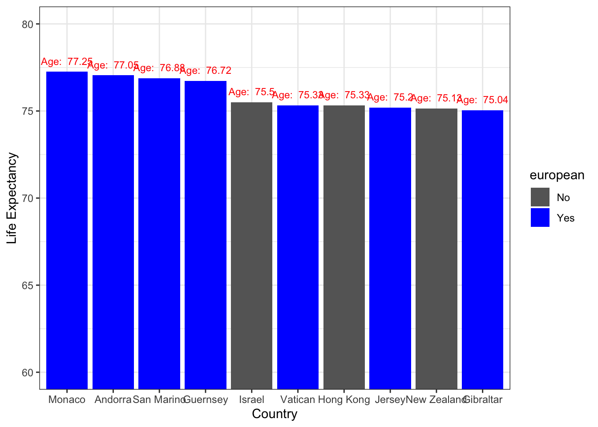
Now it seems that we should probably have a different name for the legend. Maybe “European” would be good. We can do that with option name in scale_fill_manual.
figure_1<-ggplot(life_exp_top10, aes(x = reorder(Entity, -life_expectancy), y = life_expectancy, fill=european)) +
geom_bar(position = "dodge", stat="identity")+
theme_bw()+
xlab("Country") + ylab("Life Expectancy")+
coord_cartesian(ylim = c(60,80))+
geom_text(data=life_exp_top10,
aes(label = life_expectancy_chr, y = life_expectancy,
vjust = -1), colour = "red", size=3)+
scale_fill_manual(name = "European", values = c("grey40", "blue"))
figure_1We should also probably fix the overlapping x ticks. The way we do that is by playing with the theme.
figure_1<-ggplot(life_exp_top10, aes(x = reorder(Entity, -life_expectancy), y = life_expectancy, fill=european)) +
geom_bar(position = "dodge", stat="identity")+
theme_bw()+
xlab("Country") + ylab("Life Expectancy")+
coord_cartesian(ylim = c(60,80))+
geom_text(data=life_exp_top10,
aes(label = life_expectancy_chr, y = life_expectancy,
vjust = -1), colour = "red", size=3)+
scale_fill_manual(name = "European", values = c("grey40", "blue"))+
theme(axis.text.x = element_text(angle = 90, vjust = 0.5, hjust=1))
figure_1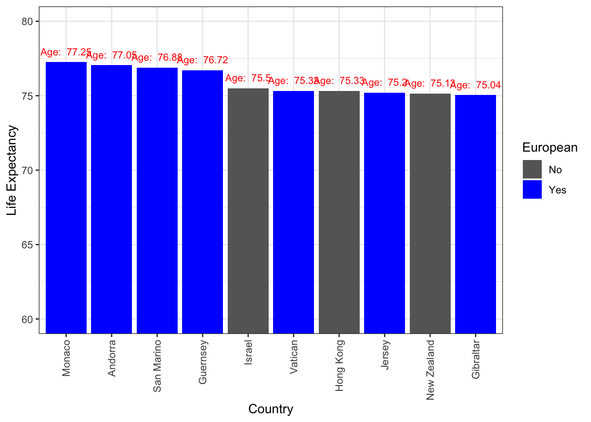
We now should do the same thing for Latin America.
#Step3: Selecting the Latin American countries
latam_countries<-c("Belize",
"Costa Rica",
"El Salvador",
"Guatemala",
"Honduras",
"Mexico",
"Nicaragua",
"Panama",
"Argentina",
"Bolivia",
"Brazil",
"Chile",
"Colombia",
"Ecuador",
"Guyana",
"Paraguay",
"Peru",
"Suriname",
"Uruguay",
"Venezuela",
"Cuba",
"Dominican Republic",
"Haiti")
latam_countries_df<-subset(clean_countries, (Entity %in% latam_countries))
head(latam_countries_df, n=10)# A tibble: 10 × 3
# Groups: Code [10]
Code Entity life_expectancy
<chr> <chr> <dbl>
1 ARG Argentina 65.4
2 BLZ Belize 66.0
3 BOL Bolivia 52.6
4 BRA Brazil 61.1
5 CHL Chile 63.3
6 COL Colombia 63.1
7 CRI Costa Rica 68.7
8 CUB Cuba 67.2
9 DOM Dominican Republic 61.1
10 ECU Ecuador 65.0life_exp_top10_latam<-head(latam_countries_df[order(latam_countries_df$life_expectancy, rev(latam_countries_df$life_expectancy), decreasing = TRUE), ], n=10)
head(life_exp_top10_latam, n=10)# A tibble: 10 × 3
# Groups: Code [10]
Code Entity life_expectancy
<chr> <chr> <dbl>
1 URY Uruguay 70.8
2 CRI Costa Rica 68.7
3 PAN Panama 68.4
4 CUB Cuba 67.2
5 BLZ Belize 66.0
6 ARG Argentina 65.4
7 ECU Ecuador 65.0
8 VEN Venezuela 64.8
9 PRY Paraguay 63.7
10 CHL Chile 63.3We should create labels first:
life_exp_top10_latam$life_expectancy_chr<-paste0("Age: ", as.character(round(life_exp_top10_latam$life_expectancy, 2)))
head(life_exp_top10_latam, n=10)# A tibble: 10 × 4
# Groups: Code [10]
Code Entity life_expectancy life_expectancy_chr
<chr> <chr> <dbl> <chr>
1 URY Uruguay 70.8 Age: 70.76
2 CRI Costa Rica 68.7 Age: 68.69
3 PAN Panama 68.4 Age: 68.41
4 CUB Cuba 67.2 Age: 67.25
5 BLZ Belize 66.0 Age: 65.97
6 ARG Argentina 65.4 Age: 65.41
7 ECU Ecuador 65.0 Age: 64.96
8 VEN Venezuela 64.8 Age: 64.85
9 PRY Paraguay 63.7 Age: 63.75
10 CHL Chile 63.3 Age: 63.3 Let us create a barplot for the top 10 countries in Latin America:
figure_2<-ggplot(life_exp_top10_latam, aes(x = reorder(Entity, -life_expectancy), y = life_expectancy)) +
geom_bar(position = "dodge", stat="identity")+
theme_bw()+
xlab("Country") + ylab("Life Expectancy")+
coord_cartesian(ylim = c(60,80))+
geom_text(data=life_exp_top10_latam,
aes(label = life_expectancy_chr, y = life_expectancy,
vjust = -1), colour = "red", size=3)+
theme(axis.text.x = element_text(angle = 90, vjust = 0.5, hjust=1))
figure_2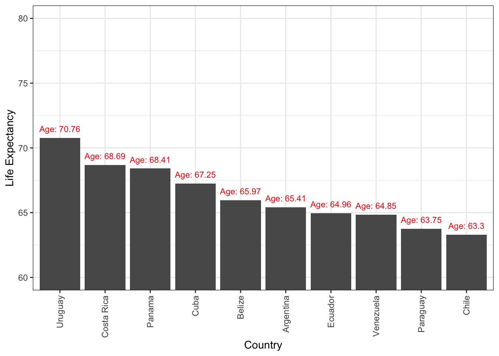
Let us now recreate the two graphs and add them together using grid.arrange.
grid.arrange(figure_1, figure_2, ncol=2)
A few things could help: - remove the blue-grey coloring - remove the Y-axis label from the second graph - Add descriptive titles - Marking the age in white inside the bar
figure_3<-ggplot(life_exp_top10, aes(x = reorder(Entity, -life_expectancy), y = life_expectancy)) +
geom_bar(position = "dodge", stat="identity")+
theme_bw()+
xlab("Country") + ylab("Life Expectancy")+
coord_cartesian(ylim = c(60,80))+
geom_text(data=life_exp_top10,
aes(label = round(life_expectancy,2), y = life_expectancy,
vjust = 2), colour = "white", size=2)+
theme(axis.text.x = element_text(angle = 90, vjust = 0.5, hjust=1))+
ggtitle("Top 10 countries in the World")
figure_3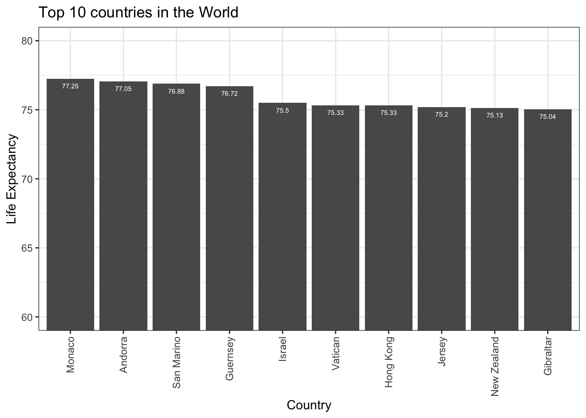
figure_4<-ggplot(life_exp_top10_latam, aes(x = reorder(Entity, -life_expectancy), y = life_expectancy)) +
geom_bar(position = "dodge", stat="identity")+
theme_bw()+
xlab("Country") + ylab("")+
coord_cartesian(ylim = c(60,80))+
geom_text(data=life_exp_top10_latam,
aes(label = round(life_expectancy,2), y = life_expectancy,
vjust = 2), colour = "white", size=2)+
theme(axis.text.x = element_text(angle = 90, vjust = 0.5, hjust=1))+
ggtitle("Top 10 countries in Latin America")
figure_4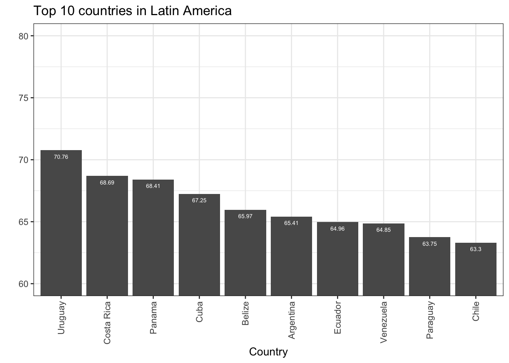
Let us now put them side by side
grid.arrange(figure_3, figure_4, ncol=2)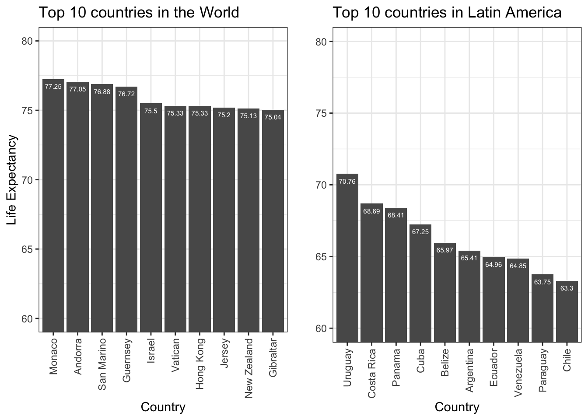
This looks much better.
3 Problem
Now we can finally ask the question: Is the mean life expectancy in Latin America equal to the population life expectancy? What kind of test do we perform?
Answer: Two-tailed z-test. This is because we are asking if something is “EQUAL” to something else.
What do we need to perform a z-test?
We need the following:
- Population Mean \(\mu\)
- Population SD \(\sigma\)
- Sample Mean for Latam: \(\bar{X}\)
- Sample size for Latam: n
Population Mean \(\mu\) is: 61.934159
Population SD \(\sigma\) is: 8.68723
Sample Mean for Latam \(\bar{X}\) is 61.9140352
Sample size for Latam n is 23
How do we know this?
mean_population<-mean(clean_countries$life_expectancy)
sd_population<-sd(clean_countries$life_expectancy)
mean_latam<-mean(latam_countries_df$life_expectancy)
sample_size_latam<-nrow(latam_countries_df)
mean_population[1] 61.93416sd_population[1] 8.68723mean_latam[1] 61.91404sample_size_latam[1] 23We can finally perform a z-test following the formula:
\[Z_{obs}=\frac{\bar{X}-\mu}{\frac{\sigma}{\sqrt{n}}}\] We now simply calculate the \(Z_obs\).
z_obs<-(mean_latam-mean_population)/(sd_population/sqrt(sample_size_latam))
z_obs[1] -0.01110945The same score can be obtained if we do the following:
z_obs2<-BSDA::z.test(latam_countries_df$life_expectancy,
mu=mean_population, sigma.x=sd_population,
alternative = "two.sided")
z_obs2
One-sample z-Test
data: latam_countries_df$life_expectancy
z = -0.011109, p-value = 0.9911
alternative hypothesis: true mean is not equal to 61.93416
95 percent confidence interval:
58.36373 65.46434
sample estimates:
mean of x
61.91404 Note that we define whether this is one-tailed or a two-tailed z-test by using the option two.sided in alternative.
What is the Null Hypothesis for a one-tailed z-test?
The Null Hypothesis - \(H_0\): The sample mean (for Latam) is equal to the population mean.
What is the Alternative Hypothesis for one-tailed z-test - \(H_1\)?
The Alternative Hypothesis - \(H_1\): The sample mean (for Latam) is NOT equal to the population mean.
Note that this is also specified in the test itself: “alternative hypothesis: true mean is not equal to 61.93416”
Do we accept or reject the \(H_0\)?
We don’t reject the \(H_0\) because the p-value of 0.9911 is larger than 0.05. The sample mean (for Latam) is equal to the population mean.
This is easier to see by doing a boxplot.
clean_countries_countinent<-clean_countries
clean_countries_countinent$sample<-NA
clean_countries_countinent$sample<-"Rest"
clean_countries_countinent$sample[clean_countries_countinent$Entity %in% latam_countries]<-"Latam"ggplot(clean_countries_countinent, aes(x = sample, y = life_expectancy, color = sample)) +
geom_boxplot() +
geom_jitter() +
theme_bw()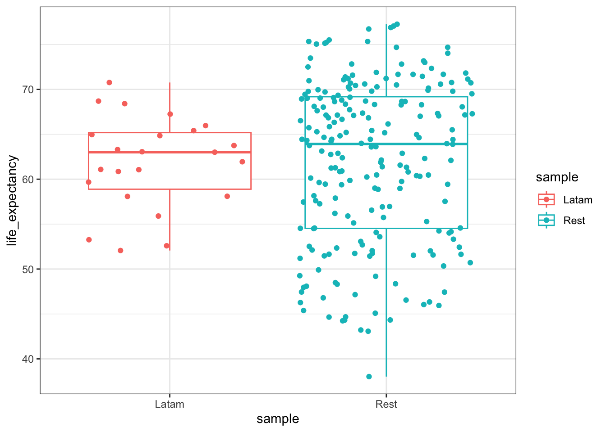
3.1 Comparing means - greater than a number
Now we can finally ask the question: Is the mean life expectancy in Latin America greater to the population life expectancy? What kind of test do we perform?
Answer: One-tailed z-test. This is because we are asking if something is “GREATER” than something else.
library(BSDA)
z_obs_greater<-BSDA::z.test(latam_countries_df$life_expectancy,
mu=mean_population, sigma.x=sd_population,
alternative = "greater")
z_obs_greater
One-sample z-Test
data: latam_countries_df$life_expectancy
z = -0.011109, p-value = 0.5044
alternative hypothesis: true mean is greater than 61.93416
95 percent confidence interval:
58.93453 NA
sample estimates:
mean of x
61.91404 What is the Null Hypothesis for a one-tailed z-test?
The Null Hypothesis - \(H_0\): The sample mean (for Latam) is not greater than the population mean.
What is the Alternative Hypothesis for a one-tailed z-test - \(H_1\)?
The Alternative Hypothesis - \(H_1\): The sample mean (for Latam) is greater than the population mean.
Do we accept or reject the \(H_0\)?
We don’t reject the \(H_0\) because the p-value of 0.5044 is larger than 0.05. The sample mean (for Latam) is not greater than the population mean.
3.2 Comparing means - less than a number
z_obs_less<-BSDA::z.test(latam_countries_df$life_expectancy,
mu=mean_population, sigma.x=sd_population,
alternative = "less")
z_obs_less
One-sample z-Test
data: latam_countries_df$life_expectancy
z = -0.011109, p-value = 0.4956
alternative hypothesis: true mean is less than 61.93416
95 percent confidence interval:
NA 64.89354
sample estimates:
mean of x
61.91404 What is the Null Hypothesis for a one-tailed z-test?
The Null Hypothesis - \(H_0\): The sample mean (for Latam) is NOT less than the population mean.
What is the Alternative Hypothesis for a one-tailed z-test - \(H_1\)?
The Alternative Hypothesis - \(H_1\): The sample mean (for Latam) is less than the population mean.
Do we accept or reject the \(H_0\)?
We don’t reject the \(H_0\) because the p-value of 0.4956 is larger than 0.05. This means that the sample mean for Latam is not less than the population mean.
4 Z-Scores
As we discussed previously, the standard normal distribution is a special type of distribution with a mean \(\mu = 0\) and a standard deviation \(\sigma = 1\). For example, a z-score of 2 tells us that we are 2 standard deviations to the right of the mean.
A z-score allows to calculate how much area that specific score is associated with using the z-score table.
generated_data_10000obs<-rnorm(10000, mean=0, sd=1)
generated_data_10000obs<-data.frame(generated_data_10000obs)
names(generated_data_10000obs)<-"value"
lines<- paste("Mean (\u03BC)", ": 0", "\n", "SD(\u03C3)", ": 1")
figure_5<-ggplot(data = generated_data_10000obs, aes(x=value))+
geom_histogram(bins=50, col="white")+
theme_bw()+
scale_x_continuous(breaks=seq(-4, 4, by = 1), limits = c(-4,4))+
annotate(geom="text",
x=-3,
y=600,
label=lines,
#parse=T,
color="red")
figure_5Warning: Removed 2 rows containing missing values (`geom_bar()`).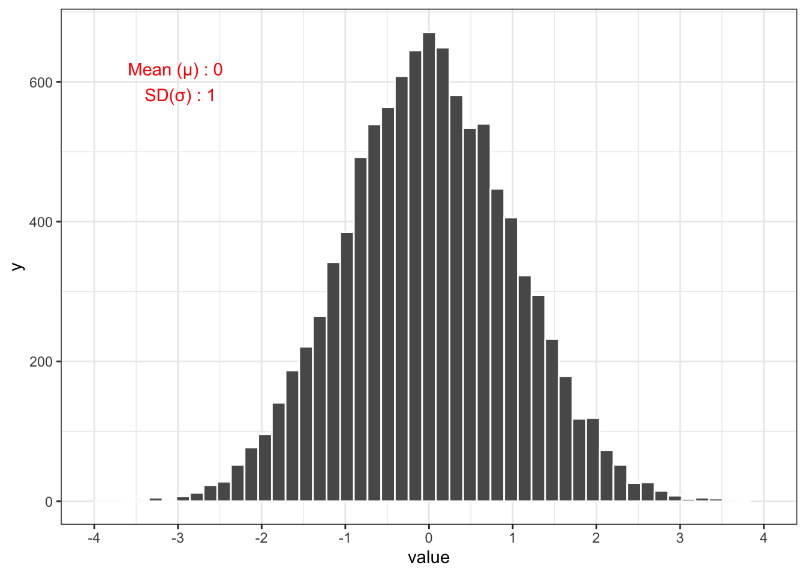
Each number on the X-axis (i.e. -4…4) corresponds to a z-score. A z-score tells us how many standard deviations an observation is from the mean \(\mu\). A z-score also allows to calculate the area associated with that z-score is, based on a z-score table (standard normal table).
The cool thing about a standard normal distribution is that any normal distribution can be turned into a standard normal distribution with a mean \(\mu\) of 0 and a standard distrubution \(\sigma\) of 1. This process is called standardization.
The standardization formula:
\[ z=\frac{x - \mu}{\sigma} \] where: z - z-score x - observation \(\mu\) - population mean \(\sigma\) - population variance
5 Converting a distribution to a standard normal distribution
#Step1: Loading the data
life_expectancy <- read.csv(file = './life-expectancy.csv')
names(life_expectancy)[4]<-"life_expectancy_values"
figure_5<-ggplot(data = life_expectancy, aes(x=life_expectancy_values))+
geom_histogram(bins=50, col="white")+
theme_bw()
figure_5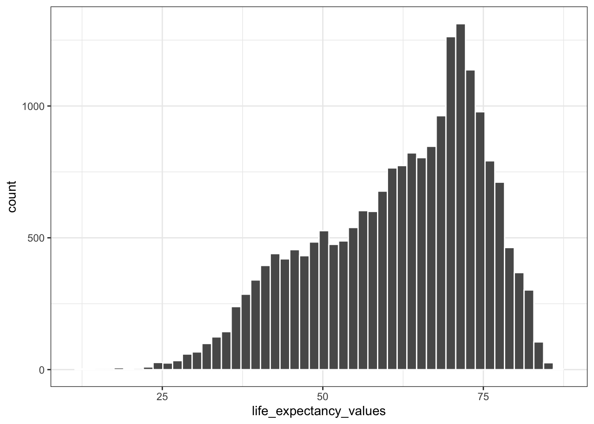
Let us examine the first entries in our dataset:
head(life_expectancy, n=10) Entity Code Year life_expectancy_values
1 Afghanistan AFG 1950 27.7
2 Afghanistan AFG 1951 28.0
3 Afghanistan AFG 1952 28.4
4 Afghanistan AFG 1953 28.9
5 Afghanistan AFG 1954 29.2
6 Afghanistan AFG 1955 29.9
7 Afghanistan AFG 1956 30.4
8 Afghanistan AFG 1957 30.9
9 Afghanistan AFG 1958 31.5
10 Afghanistan AFG 1959 32.0Let us now apply standardization to our dataset.
5.1 Step: Calculating the mean
mean_life_exp<-mean(life_expectancy$life_expectancy_values, na.rm=T)The mean for life expectancy throughout the world for the entire time series between 1543 and 2021 is 61.78. How come we have years that are lower than 1800? Let’s examine what the countries for which we have such long historical data are.
historical_df_life_exp<-subset(life_expectancy, Year<1800)
unique(historical_df_life_exp$Entity)[1] "Denmark" "Europe" "Finland" "Sweden"
[5] "United Kingdom"Thus, we can clearly see that our dataset contains detailed historical data on life expectancy for: Denmark, Europe, Finland, Sweden, United Kingdom. This is even more visible if we plot the time series for these countries prior to 1800s.
figure_6<-ggplot(data = historical_df_life_exp, aes(x = Year, y = life_expectancy_values))+
geom_line(aes(color = Entity))+
theme_bw()
figure_6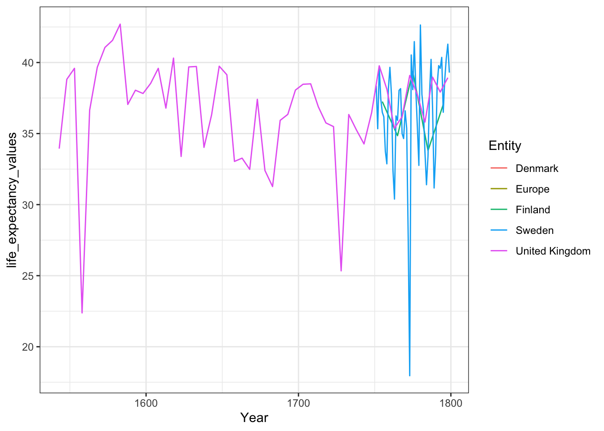
So the graph shows us that we have the longest data for the UK.
5.2 Step: Calculating the variance
The next step entails calculating the variance of our dataset.
var_life_exp<-var(life_expectancy$life_expectancy_values, na.rm=T)
var_life_exp[1] 167.3311Life expectancy has a variance of 167.3311413, and the standard deviation is 12.94.
5.3 Step: Applying the formula
We can now apply the formula:
\[ z=\frac{x - \mu}{\sigma} \]
Entity Code Year life_expectancy_values
1 Afghanistan AFG 1950 27.7
2 Afghanistan AFG 1951 28.0
3 Afghanistan AFG 1952 28.4
4 Afghanistan AFG 1953 28.9
5 Afghanistan AFG 1954 29.2
6 Afghanistan AFG 1955 29.9
7 Afghanistan AFG 1956 30.4
8 Afghanistan AFG 1957 30.9
9 Afghanistan AFG 1958 31.5
10 Afghanistan AFG 1959 32.0
z_score
1 (life_expectancy - mean) / variance
2 (life_expectancy - mean) / variance
3 (life_expectancy - mean) / variance
4 (life_expectancy - mean) / variance
5 (life_expectancy - mean) / variance
6 (life_expectancy - mean) / variance
7 (life_expectancy - mean) / variance
8 (life_expectancy - mean) / variance
9 (life_expectancy - mean) / variance
10 (life_expectancy - mean) / variance Entity Code Year life_expectancy_values z_score
1 Afghanistan AFG 1950 27.7 (27.7 - 61.78) / 167
2 Afghanistan AFG 1951 28.0 (28 - 61.78) / 167
3 Afghanistan AFG 1952 28.4 (28.4 - 61.78) / 167
4 Afghanistan AFG 1953 28.9 (28.9 - 61.78) / 167
5 Afghanistan AFG 1954 29.2 (29.2 - 61.78) / 167
6 Afghanistan AFG 1955 29.9 (29.9 - 61.78) / 167
7 Afghanistan AFG 1956 30.4 (30.4 - 61.78) / 167
8 Afghanistan AFG 1957 30.9 (30.9 - 61.78) / 167
9 Afghanistan AFG 1958 31.5 (31.5 - 61.78) / 167
10 Afghanistan AFG 1959 32.0 (32 - 61.78) / 167 Entity Code Year life_expectancy_values z_score
1 Afghanistan AFG 1950 27.7 -0.2036959
2 Afghanistan AFG 1951 28.0 -0.2019030
3 Afghanistan AFG 1952 28.4 -0.1995126
4 Afghanistan AFG 1953 28.9 -0.1965245
5 Afghanistan AFG 1954 29.2 -0.1947316
6 Afghanistan AFG 1955 29.9 -0.1905483
7 Afghanistan AFG 1956 30.4 -0.1875602
8 Afghanistan AFG 1957 30.9 -0.1845721
9 Afghanistan AFG 1958 31.5 -0.1809864
10 Afghanistan AFG 1959 32.0 -0.1779983Let’s do exactly that and inspect the first 10 entries:
life_expectancy$z_score<-(life_expectancy$life_expectancy_values- mean_life_exp) / var_life_exp
head(life_expectancy, n=10) Entity Code Year life_expectancy_values z_score
1 Afghanistan AFG 1950 27.7 -0.2036959
2 Afghanistan AFG 1951 28.0 -0.2019030
3 Afghanistan AFG 1952 28.4 -0.1995126
4 Afghanistan AFG 1953 28.9 -0.1965245
5 Afghanistan AFG 1954 29.2 -0.1947316
6 Afghanistan AFG 1955 29.9 -0.1905483
7 Afghanistan AFG 1956 30.4 -0.1875602
8 Afghanistan AFG 1957 30.9 -0.1845721
9 Afghanistan AFG 1958 31.5 -0.1809864
10 Afghanistan AFG 1959 32.0 -0.17799836 Plotting the new distribution
We can now plot the new distribution:
lines<- paste("Mean (\u03BC)", ": ", round(mean_life_exp, 2), "\n", "SD(\u03C3)", ": ", round(sd(life_expectancy$life_expectancy_values, na.rm=T), 2))
figure_7<-ggplot(data = life_expectancy, aes(x=z_score))+
geom_histogram(bins=50, col="white")+
theme_bw()+
scale_x_continuous(breaks=seq(-0.3, 0.3, by = 0.1), limits = c(-0.3, 0.3),
labels = scales::comma)+
annotate(geom="text",
x=-0.2,
y=1000,
label=lines,
#parse=T,
color="red")
figure_7Warning: Removed 2 rows containing missing values (`geom_bar()`).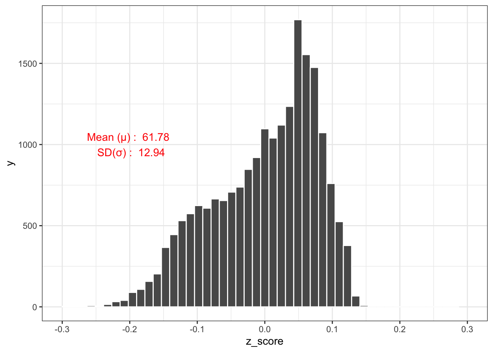
I used scales::comma option within scale_x_continuous to avoid scientific notation.
Let us now plot the two histograms side by side
grid.arrange(figure_5, figure_7, ncol=2)Warning: Removed 2 rows containing missing values (`geom_bar()`).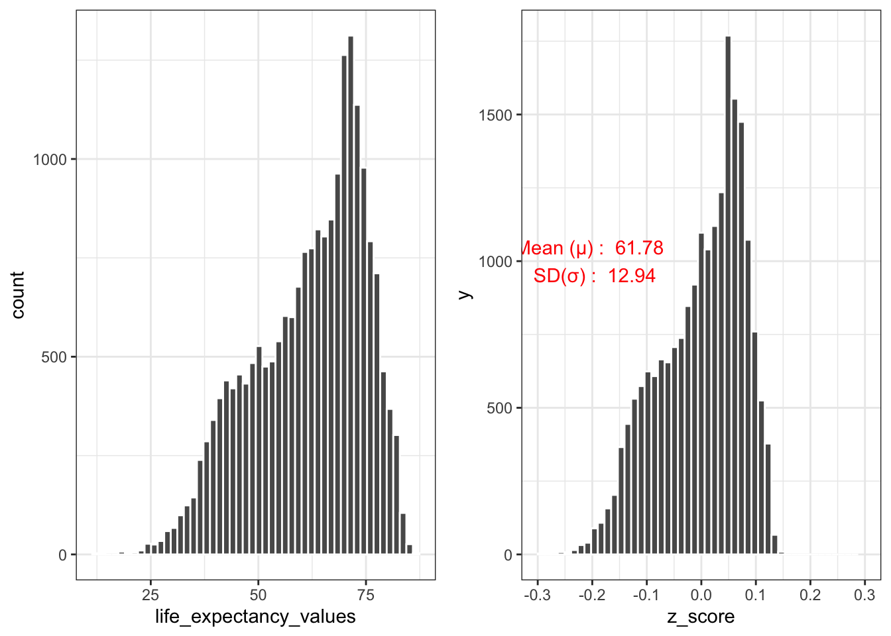
We can see that the distributions are very similar. The logic is that if I plug in an x values of 50, that will give a z-score of -0.0704272. Similarly, if I plug an x value of 80, that will give a z-score of 0.108858.
7 From Normal Distributions to Standard Normal Distributions
To further understand how the normal distribution turns into a standard normal distribution, let us work with 10 bins, which we create manually.
#Step1: Cutting our data in 10 with manually defined values
cutpoints <- c(0, 10, 20, 30, 40, 50, 60, 70, 80, 90)
cutpoints [1] 0 10 20 30 40 50 60 70 80 90#Step2: Creating Bin Indicators in our dataframe
life_expectancy$bin_indicator <- cut(life_expectancy$life_expectancy_values,cutpoints,include.lowest=TRUE)
head(life_expectancy, n=10) Entity Code Year life_expectancy_values z_score bin_indicator
1 Afghanistan AFG 1950 27.7 -0.2036959 (20,30]
2 Afghanistan AFG 1951 28.0 -0.2019030 (20,30]
3 Afghanistan AFG 1952 28.4 -0.1995126 (20,30]
4 Afghanistan AFG 1953 28.9 -0.1965245 (20,30]
5 Afghanistan AFG 1954 29.2 -0.1947316 (20,30]
6 Afghanistan AFG 1955 29.9 -0.1905483 (20,30]
7 Afghanistan AFG 1956 30.4 -0.1875602 (30,40]
8 Afghanistan AFG 1957 30.9 -0.1845721 (30,40]
9 Afghanistan AFG 1958 31.5 -0.1809864 (30,40]
10 Afghanistan AFG 1959 32.0 -0.1779983 (30,40]#Step3: Calculate how many observations are included in each bin
life_expectancy2<-life_expectancy %>%
group_by(bin_indicator) %>%
mutate(observations = n())
head(life_expectancy2, n=10)# A tibble: 10 × 7
# Groups: bin_indicator [2]
Entity Code Year life_expectancy_values z_score bin_indicator observ…¹
<chr> <chr> <int> <dbl> <dbl> <fct> <int>
1 Afghanistan AFG 1950 27.7 -0.204 (20,30] 181
2 Afghanistan AFG 1951 28 -0.202 (20,30] 181
3 Afghanistan AFG 1952 28.4 -0.200 (20,30] 181
4 Afghanistan AFG 1953 28.9 -0.197 (20,30] 181
5 Afghanistan AFG 1954 29.2 -0.195 (20,30] 181
6 Afghanistan AFG 1955 29.9 -0.191 (20,30] 181
7 Afghanistan AFG 1956 30.4 -0.188 (30,40] 1217
8 Afghanistan AFG 1957 30.9 -0.185 (30,40] 1217
9 Afghanistan AFG 1958 31.5 -0.181 (30,40] 1217
10 Afghanistan AFG 1959 32 -0.178 (30,40] 1217
# … with abbreviated variable name ¹observations#Step4: Making the histogram
figure_8<-ggplot(data = life_expectancy2, aes(x=life_expectancy_values))+
geom_histogram(bins=10, breaks=cutpoints,
col="white")+
theme_bw()
figure_8 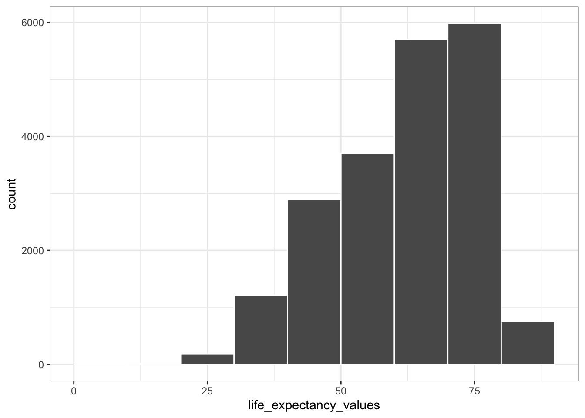
It might make sense to include the cutoff points for the purpose of clarity. But before we do that, we need to create individual labels.
labels<-subset(life_expectancy2, !duplicated(life_expectancy2$bin_indicator))
head(labels, n = 10)# A tibble: 8 × 7
# Groups: bin_indicator [8]
Entity Code Year life_expectancy_values z_score bin_indicator observ…¹
<chr> <chr> <int> <dbl> <dbl> <fct> <int>
1 Afghanistan AFG 1950 27.7 -0.204 (20,30] 181
2 Afghanistan AFG 1956 30.4 -0.188 (30,40] 1217
3 Afghanistan AFG 1975 40.1 -0.130 (40,50] 2893
4 Afghanistan AFG 1993 51.5 -0.0615 (50,60] 3703
5 Afghanistan AFG 2009 60.4 -0.00828 (60,70] 5702
6 Albania ALB 1980 70.5 0.0521 (70,80] 5983
7 Andorra AND 1992 80.3 0.111 (80,90] 752
8 Cambodia KHM 1975 12 -0.298 (10,20] 14
# … with abbreviated variable name ¹observationsIt probably now makes sense to get rid of the variables which we no longer need: Entity, Code, Year, life_expectancy_values and z_score.
labels<-subset(labels, select = -c(Entity, Code, Year, life_expectancy_values, z_score))
head(labels, n=10)# A tibble: 8 × 2
# Groups: bin_indicator [8]
bin_indicator observations
<fct> <int>
1 (20,30] 181
2 (30,40] 1217
3 (40,50] 2893
4 (50,60] 3703
5 (60,70] 5702
6 (70,80] 5983
7 (80,90] 752
8 (10,20] 14Every text that we add to ggplot will need a set of coordinates or an x (horizontal) and y (vertical). These are the two numbers which tell R where the text should be placed. If we look at our labels dataframe, we can see that observations can be used as the y-coordinate.
Let us create a new variable called y_coordinate.
labels$y_coord<-labels$observationsIf we look at the other other variable, we can probably use the first value of the bin indicator as an x-coordinate. The only issue is that the bin indicator variable is a string variable. Therefore, we need to find a way to extract the first number from the bin indicator. For example, we need to find to extract “20” from “(20, 30]” or “30” from “(30,40]”.
The way to do this is by using the stringi library.
library(stringi)Let us examine if this does what we expect it to do:
string_to_extract<-"(20, 30]"
stri_extract_first_regex(string_to_extract, "\\d+([.]\\d+)?")[1] "20"Let’s try another example:
string_to_extract<-"(30, 40]"
stri_extract_first_regex(string_to_extract, "\\d+([.]\\d+)?")[1] "30"Does this work with lists?
string_to_extract<-c("(20, 30]", "(30, 40]")
stri_extract_first_regex(string_to_extract, "\\d+([.]\\d+)?")[1] "20" "30"Yes. The stri_extract_first_regex seems to work for list. Therefore, it is a good contender to user for our label dataframe.
labels$x_coord<-stri_extract_first_regex(labels$bin_indicator, '\\d+([.]\\d+)?')
labels$x_coord<-as.numeric(labels$x_coord)
labels# A tibble: 8 × 4
# Groups: bin_indicator [8]
bin_indicator observations y_coord x_coord
<fct> <int> <int> <dbl>
1 (20,30] 181 181 20
2 (30,40] 1217 1217 30
3 (40,50] 2893 2893 40
4 (50,60] 3703 3703 50
5 (60,70] 5702 5702 60
6 (70,80] 5983 5983 70
7 (80,90] 752 752 80
8 (10,20] 14 14 10We are now in a good position to place our annotation: bin_indicator
figure_9<-ggplot(data = life_expectancy2, aes(x=life_expectancy_values))+
geom_histogram(bins=10, breaks=cutpoints,
col="white")+
theme_bw()+
geom_text(data=labels,
aes(label = bin_indicator, y = y_coord, x= x_coord), colour = "red")
figure_9 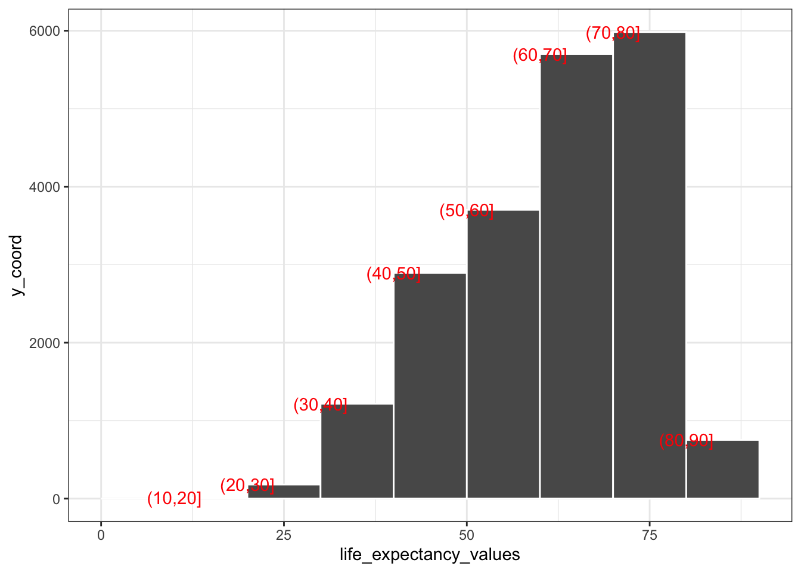
Let us now also include the number of observations in each bin.
figure_10<-ggplot(data = life_expectancy2, aes(x=life_expectancy_values))+
geom_histogram(bins=10, breaks=cutpoints,
col="white")+
theme_bw()+
geom_text(data=labels,
aes(label = bin_indicator, y = y_coord, x= x_coord), colour = "red")+
geom_text(data=labels,
aes(label = observations, y = y_coord, x= x_coord), colour = "red")
figure_10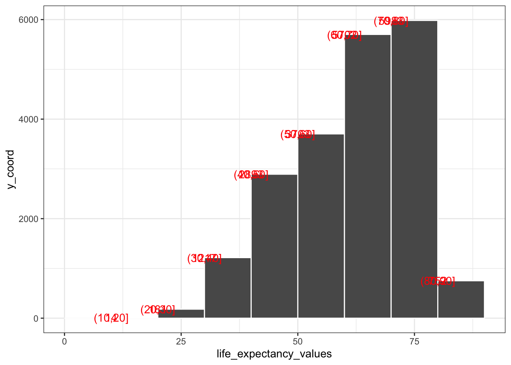
Ooops. This does not look great. The bin inidcator overlaps with the number of observations. We should therefore maybe change the coordinate for the number of observations so that they appear underneath the bin indicator variable. The way to do this is by using the vjust option. If we say vjust = 2, this means that it adds 2 to the vertical coordinate.
figure_11<-ggplot(data = life_expectancy2, aes(x=life_expectancy_values))+
geom_histogram(bins=10, breaks=cutpoints,
col="white")+
theme_bw()+
geom_text(data=labels,
aes(label = bin_indicator, y = y_coord, x= x_coord), colour = "red")+
geom_text(data=labels,
aes(label = observations, y = y_coord, x= x_coord,
vjust = 1.5, hjust = 0), colour = "red")
figure_11
To make it even more clear that the second number is the number of observations, it probably makes sense to indicate that the second number is the number of observations.
labels$observations_chr<-paste0("Obs: ", as.character(labels$observations), sep="")Let us now inspect the result.
head(labels, n=10)# A tibble: 8 × 5
# Groups: bin_indicator [8]
bin_indicator observations y_coord x_coord observations_chr
<fct> <int> <int> <dbl> <chr>
1 (20,30] 181 181 20 Obs: 181
2 (30,40] 1217 1217 30 Obs: 1217
3 (40,50] 2893 2893 40 Obs: 2893
4 (50,60] 3703 3703 50 Obs: 3703
5 (60,70] 5702 5702 60 Obs: 5702
6 (70,80] 5983 5983 70 Obs: 5983
7 (80,90] 752 752 80 Obs: 752
8 (10,20] 14 14 10 Obs: 14 Let us now replot the results using the newly created variable observations_chr.
figure_12<-ggplot(data = life_expectancy2, aes(x=life_expectancy_values))+
geom_histogram(bins=10, breaks=cutpoints,
col="white")+
theme_bw()+
geom_text(data=labels,
aes(label = bin_indicator, y = y_coord, x= x_coord), colour = "red")+
geom_text(data=labels,
aes(label = observations_chr, y = y_coord, x= x_coord,
vjust = 1.5, hjust = 0), colour = "red")
figure_12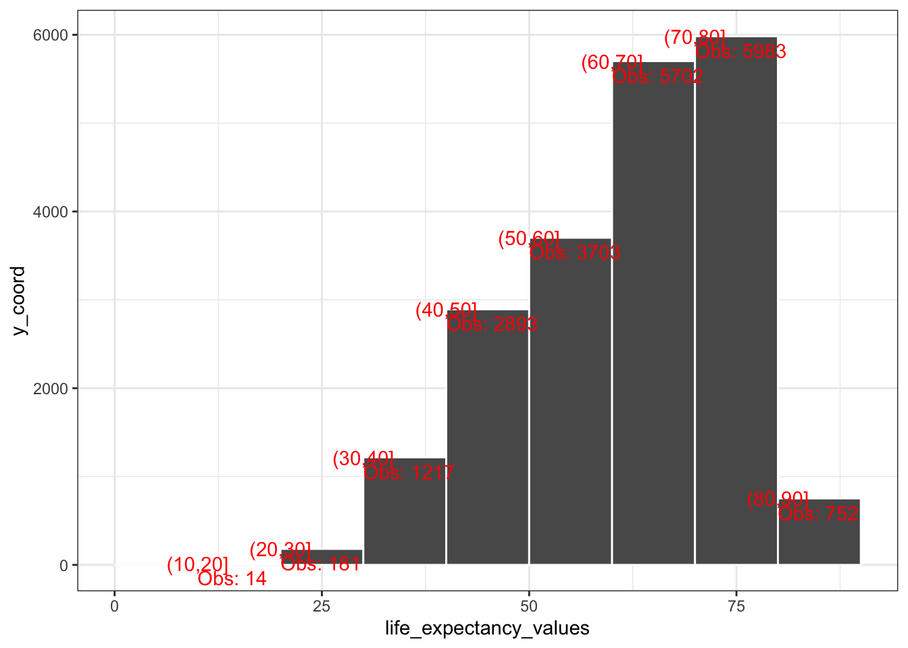
It might be a good idea to make the number of observations smaller.
figure_13<-ggplot(data = life_expectancy2, aes(x=life_expectancy_values))+
geom_histogram(bins=10, breaks=cutpoints,
col="white")+
theme_bw()+
geom_text(data=labels,
aes(label = bin_indicator, y = y_coord, x= x_coord), colour = "red")+
geom_text(data=labels,
aes(label = observations_chr, y = y_coord, x= x_coord,
vjust = 1.5, hjust = 0), colour = "red", size=3)
figure_13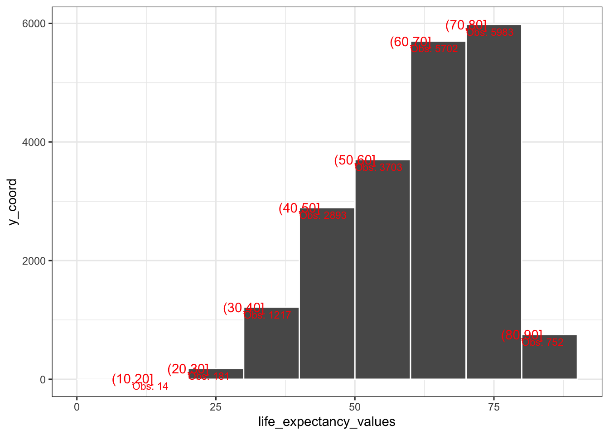
To illustrate how our values turn into z-score, it probably makes sense to transform our data and work with a smaller dataset.
We can therefore calculate mean ages by bin indicator and then calculate the corresponding z-score.
life_expectancy3<-life_expectancy2 %>%
group_by(bin_indicator) %>%
mutate(mean_age_bin = mean(life_expectancy_values))
head(life_expectancy3, n=10)# A tibble: 10 × 8
# Groups: bin_indicator [2]
Entity Code Year life_expectancy_val…¹ z_score bin_i…² obser…³ mean_…⁴
<chr> <chr> <int> <dbl> <dbl> <fct> <int> <dbl>
1 Afghanistan AFG 1950 27.7 -0.204 (20,30] 181 27.1
2 Afghanistan AFG 1951 28 -0.202 (20,30] 181 27.1
3 Afghanistan AFG 1952 28.4 -0.200 (20,30] 181 27.1
4 Afghanistan AFG 1953 28.9 -0.197 (20,30] 181 27.1
5 Afghanistan AFG 1954 29.2 -0.195 (20,30] 181 27.1
6 Afghanistan AFG 1955 29.9 -0.191 (20,30] 181 27.1
7 Afghanistan AFG 1956 30.4 -0.188 (30,40] 1217 36.4
8 Afghanistan AFG 1957 30.9 -0.185 (30,40] 1217 36.4
9 Afghanistan AFG 1958 31.5 -0.181 (30,40] 1217 36.4
10 Afghanistan AFG 1959 32 -0.178 (30,40] 1217 36.4
# … with abbreviated variable names ¹life_expectancy_values, ²bin_indicator,
# ³observations, ⁴mean_age_binLet us now also calculate the z-scores for each bin, assuming that each bin is an individual observation:
life_expectancy4<-life_expectancy3 %>%
group_by(bin_indicator) %>%
mutate(age_bin_zscore = (mean_age_bin-mean_life_exp)/var_life_exp)
head(life_expectancy4, n=10)# A tibble: 10 × 9
# Groups: bin_indicator [2]
Entity Code Year life_expect…¹ z_score bin_i…² obser…³ mean_…⁴ age_b…⁵
<chr> <chr> <int> <dbl> <dbl> <fct> <int> <dbl> <dbl>
1 Afghanistan AFG 1950 27.7 -0.204 (20,30] 181 27.1 -0.207
2 Afghanistan AFG 1951 28 -0.202 (20,30] 181 27.1 -0.207
3 Afghanistan AFG 1952 28.4 -0.200 (20,30] 181 27.1 -0.207
4 Afghanistan AFG 1953 28.9 -0.197 (20,30] 181 27.1 -0.207
5 Afghanistan AFG 1954 29.2 -0.195 (20,30] 181 27.1 -0.207
6 Afghanistan AFG 1955 29.9 -0.191 (20,30] 181 27.1 -0.207
7 Afghanistan AFG 1956 30.4 -0.188 (30,40] 1217 36.4 -0.151
8 Afghanistan AFG 1957 30.9 -0.185 (30,40] 1217 36.4 -0.151
9 Afghanistan AFG 1958 31.5 -0.181 (30,40] 1217 36.4 -0.151
10 Afghanistan AFG 1959 32 -0.178 (30,40] 1217 36.4 -0.151
# … with abbreviated variable names ¹life_expectancy_values, ²bin_indicator,
# ³observations, ⁴mean_age_bin, ⁵age_bin_zscoreThe procesure of getting z-scores is also called “standardization”. We may want to add these new measures to our histogram. To do that, we need to redo our labels.
#Step1: Removing duplicates
labels<-subset(life_expectancy4, !duplicated(life_expectancy2$bin_indicator))
#Step2: Removing irrelevant variables
labels<-subset(labels, select = -c(Entity, Code, Year, life_expectancy_values, z_score))
#Step3: Creating the y-coordinate
labels$y_coord<-labels$observations
#Step4: Extracting the left edge of the bin
labels$x_coord<-stri_extract_first_regex(labels$bin_indicator, '\\d+([.]\\d+)?')
labels$x_coord<-as.numeric(labels$x_coord)
#Step5: Creating Obs. + value
labels$observations_chr<-paste0("Obs: ", as.character(labels$observations), sep="")
#Step6: Inspecting the result
head(labels, n=10)# A tibble: 8 × 7
# Groups: bin_indicator [8]
bin_indicator observations mean_age_bin age_bin_zscore y_coord x_coord obser…¹
<fct> <int> <dbl> <dbl> <int> <dbl> <chr>
1 (20,30] 181 27.1 -0.207 181 20 Obs: 1…
2 (30,40] 1217 36.4 -0.151 1217 30 Obs: 1…
3 (40,50] 2893 45.2 -0.0990 2893 40 Obs: 2…
4 (50,60] 3703 55.3 -0.0385 3703 50 Obs: 3…
5 (60,70] 5702 65.4 0.0217 5702 60 Obs: 5…
6 (70,80] 5983 74.1 0.0737 5983 70 Obs: 5…
7 (80,90] 752 81.8 0.120 752 80 Obs: 7…
8 (10,20] 14 16.5 -0.271 14 10 Obs: 14
# … with abbreviated variable name ¹observations_chrWe need to create equally intuitive labels for the bin mean and z-score.
#Step7: Rounding bin mean age to two decimals
labels$mean_age_bin<-round(labels$mean_age_bin, 2)
#Step8: Rounding bin z-score to two decimals
labels$age_bin_zscore<-round(labels$age_bin_zscore, 2)
#Step8: Creating mean age character
labels$mean_age_bin_chr<-paste0("Mean Bin: ", as.character(labels$mean_age_bin), sep="")
#Step9: Creating bin z-score character
labels$age_bin_zscore_chr<-paste0("Z-Score Bin: ", as.character(labels$age_bin_zscore), sep="")
head(labels, n=10)# A tibble: 8 × 9
# Groups: bin_indicator [8]
bin_indicator observ…¹ mean_…² age_b…³ y_coord x_coord obser…⁴ mean_…⁵ age_b…⁶
<fct> <int> <dbl> <dbl> <int> <dbl> <chr> <chr> <chr>
1 (20,30] 181 27.1 -0.21 181 20 Obs: 1… Mean B… Z-Scor…
2 (30,40] 1217 36.4 -0.15 1217 30 Obs: 1… Mean B… Z-Scor…
3 (40,50] 2893 45.2 -0.1 2893 40 Obs: 2… Mean B… Z-Scor…
4 (50,60] 3703 55.4 -0.04 3703 50 Obs: 3… Mean B… Z-Scor…
5 (60,70] 5702 65.4 0.02 5702 60 Obs: 5… Mean B… Z-Scor…
6 (70,80] 5983 74.1 0.07 5983 70 Obs: 5… Mean B… Z-Scor…
7 (80,90] 752 81.8 0.12 752 80 Obs: 7… Mean B… Z-Scor…
8 (10,20] 14 16.5 -0.27 14 10 Obs: 14 Mean B… Z-Scor…
# … with abbreviated variable names ¹observations, ²mean_age_bin,
# ³age_bin_zscore, ⁴observations_chr, ⁵mean_age_bin_chr, ⁶age_bin_zscore_chrWe can now plot them.
figure_14<-ggplot(data = life_expectancy2, aes(x=life_expectancy_values))+
geom_histogram(bins=10, breaks=cutpoints,
col="white")+
theme_bw()+
geom_text(data=labels,
aes(label = bin_indicator, y = y_coord, x= x_coord), colour = "red")+
geom_text(data=labels,
aes(label = observations_chr, y = y_coord, x= x_coord,
vjust = 1.5, hjust = 0), colour = "red", size=3)+
geom_text(data=labels,
aes(label = mean_age_bin_chr, y = y_coord, x= x_coord,
vjust = 2.5, hjust = 0), colour = "red", size=3)+
geom_text(data=labels,
aes(label = age_bin_zscore_chr, y = y_coord, x= x_coord,
vjust = 3.5, hjust = 0), colour = "red", size=3)
figure_14This is kind of ugly. We can maybe improve the appearance by placing the text further up and increasing the distance between labels.
figure_15<-ggplot(data = life_expectancy2, aes(x=life_expectancy_values))+
geom_histogram(bins=10, breaks=cutpoints,
col="white")+
theme_bw()+
geom_text(data=labels,
aes(label = bin_indicator, y = y_coord, x= x_coord,
vjust = -0.5, hjust = 0), colour = "red", size=3)+
geom_text(data=labels,
aes(label = observations_chr, y = y_coord, x= x_coord,
vjust = -2, hjust = 0), colour = "red", size=3)+
geom_text(data=labels,
aes(label = mean_age_bin_chr, y = y_coord, x= x_coord,
vjust = -3, hjust = 0), colour = "red", size=3)+
geom_text(data=labels,
aes(label = age_bin_zscore_chr, y = y_coord, x= x_coord,
vjust = -4.5, hjust = 0), colour = "red", size=3)
figure_15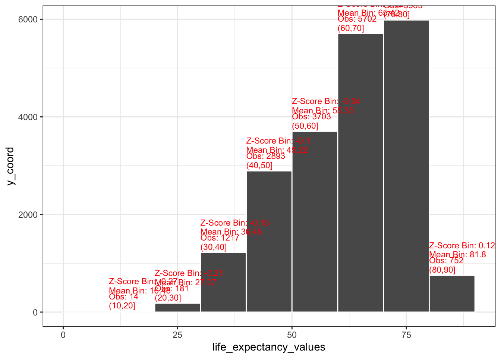
Similarly, it might make sense to increase the size of the y axis.
figure_16<-ggplot(data = life_expectancy2, aes(x=life_expectancy_values))+
geom_histogram(bins=10, breaks=cutpoints,
col="white")+
theme_bw()+
geom_text(data=labels,
aes(label = bin_indicator, y = y_coord, x= x_coord,
vjust = -0.5, hjust = 0), colour = "red", size=3)+
geom_text(data=labels,
aes(label = observations_chr, y = y_coord, x= x_coord,
vjust = -2, hjust = 0), colour = "red", size=3)+
geom_text(data=labels,
aes(label = mean_age_bin_chr, y = y_coord, x= x_coord,
vjust = -3, hjust = 0), colour = "red", size=3)+
geom_text(data=labels,
aes(label = age_bin_zscore_chr, y = y_coord, x= x_coord,
vjust = -4.5, hjust = 0), colour = "red", size=3)+
scale_y_continuous(breaks=seq(-100, 6500, by = 500), limits = c(-100, 6500))
figure_16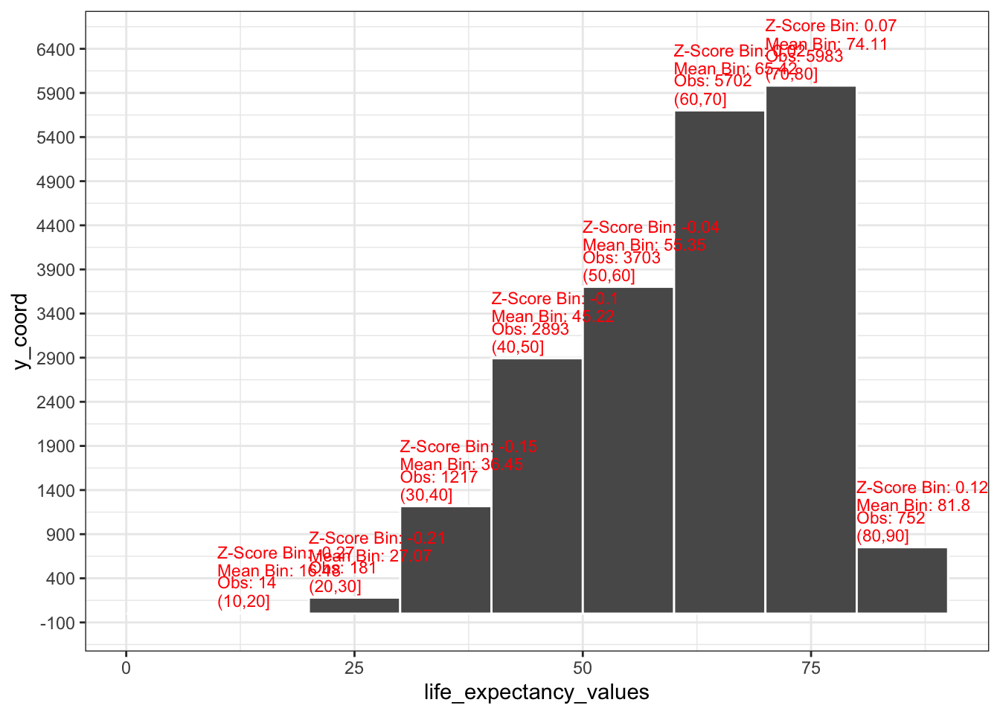
As a final tweak, we may want to decrease the font a bit more.
figure_17<-ggplot(data = life_expectancy2, aes(x=life_expectancy_values))+
geom_histogram(bins=10, breaks=cutpoints,
col="white")+
theme_bw()+
geom_text(data=labels,
aes(label = bin_indicator, y = y_coord, x= x_coord,
vjust = -0.5, hjust = 0), colour = "red", size=2)+
geom_text(data=labels,
aes(label = observations_chr, y = y_coord, x= x_coord,
vjust = -2, hjust = 0), colour = "red", size=2)+
geom_text(data=labels,
aes(label = mean_age_bin_chr, y = y_coord, x= x_coord,
vjust = -3, hjust = 0), colour = "red", size=2)+
geom_text(data=labels,
aes(label = age_bin_zscore_chr, y = y_coord, x= x_coord,
vjust = -4.5, hjust = 0), colour = "red", size=2)+
scale_y_continuous(breaks=seq(-100, 6500, by = 500), limits = c(-100, 6500))
figure_17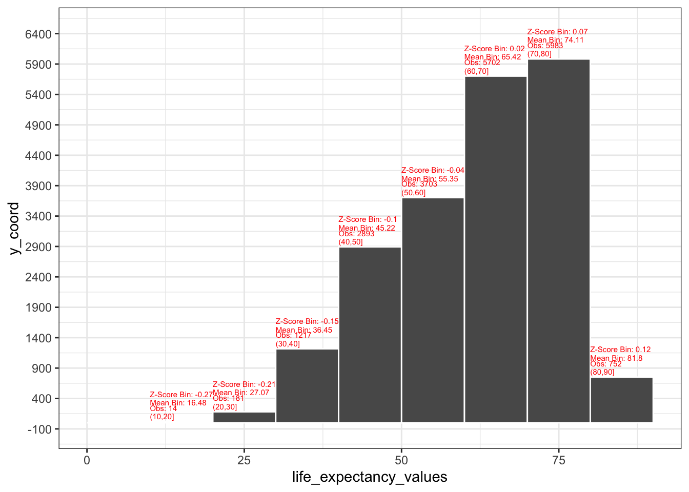
Let us now plot the z values.
life_expectancy2# A tibble: 20,445 × 7
# Groups: bin_indicator [8]
Entity Code Year life_expectancy_values z_score bin_indicator observ…¹
<chr> <chr> <int> <dbl> <dbl> <fct> <int>
1 Afghanistan AFG 1950 27.7 -0.204 (20,30] 181
2 Afghanistan AFG 1951 28 -0.202 (20,30] 181
3 Afghanistan AFG 1952 28.4 -0.200 (20,30] 181
4 Afghanistan AFG 1953 28.9 -0.197 (20,30] 181
5 Afghanistan AFG 1954 29.2 -0.195 (20,30] 181
6 Afghanistan AFG 1955 29.9 -0.191 (20,30] 181
7 Afghanistan AFG 1956 30.4 -0.188 (30,40] 1217
8 Afghanistan AFG 1957 30.9 -0.185 (30,40] 1217
9 Afghanistan AFG 1958 31.5 -0.181 (30,40] 1217
10 Afghanistan AFG 1959 32 -0.178 (30,40] 1217
# … with 20,435 more rows, and abbreviated variable name ¹observationsWe can do it directly without specifying the cutpoints.
figure_18<-ggplot(data = life_expectancy2, aes(x=z_score))+
geom_histogram(bins=10,
col="white")+
theme_bw()
figure_18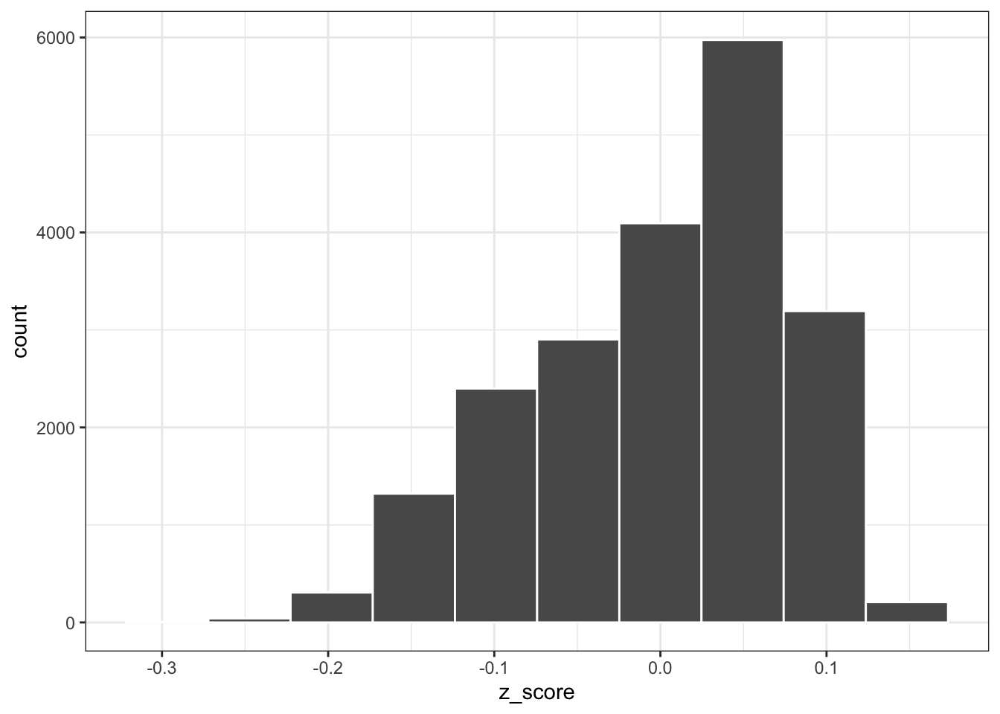
However, to make it match the data exactly, we need to use define our z cutoff points, exactly based on the age cutoff points, which we defined earlier.
#Step1: Cutting our data in 10 with manually defined values
cutpoints <- c(0, 10, 20, 30, 40, 50, 60, 70, 80, 90)
cutpoints [1] 0 10 20 30 40 50 60 70 80 90#Step2: Creating Bin Indicators in our dataframe
life_expectancy2$bin_indicator <- cut(life_expectancy2$life_expectancy_values,cutpoints,include.lowest=TRUE)
head(life_expectancy2, n=10)# A tibble: 10 × 7
# Groups: bin_indicator [2]
Entity Code Year life_expectancy_values z_score bin_indicator observ…¹
<chr> <chr> <int> <dbl> <dbl> <fct> <int>
1 Afghanistan AFG 1950 27.7 -0.204 (20,30] 181
2 Afghanistan AFG 1951 28 -0.202 (20,30] 181
3 Afghanistan AFG 1952 28.4 -0.200 (20,30] 181
4 Afghanistan AFG 1953 28.9 -0.197 (20,30] 181
5 Afghanistan AFG 1954 29.2 -0.195 (20,30] 181
6 Afghanistan AFG 1955 29.9 -0.191 (20,30] 181
7 Afghanistan AFG 1956 30.4 -0.188 (30,40] 1217
8 Afghanistan AFG 1957 30.9 -0.185 (30,40] 1217
9 Afghanistan AFG 1958 31.5 -0.181 (30,40] 1217
10 Afghanistan AFG 1959 32 -0.178 (30,40] 1217
# … with abbreviated variable name ¹observationsThen we can create cutoff points for the z-scores that correspond exactly to the age cutoff points.
life_expectancy5<-life_expectancy2%>%
group_by(bin_indicator)%>%
mutate(min_z_score_bin = min(z_score),
max_z_score_bin = max(z_score))
head(life_expectancy5)# A tibble: 6 × 9
# Groups: bin_indicator [1]
Entity Code Year life_expecta…¹ z_score bin_i…² obser…³ min_z…⁴ max_z…⁵
<chr> <chr> <int> <dbl> <dbl> <fct> <int> <dbl> <dbl>
1 Afghanistan AFG 1950 27.7 -0.204 (20,30] 181 -0.249 -0.190
2 Afghanistan AFG 1951 28 -0.202 (20,30] 181 -0.249 -0.190
3 Afghanistan AFG 1952 28.4 -0.200 (20,30] 181 -0.249 -0.190
4 Afghanistan AFG 1953 28.9 -0.197 (20,30] 181 -0.249 -0.190
5 Afghanistan AFG 1954 29.2 -0.195 (20,30] 181 -0.249 -0.190
6 Afghanistan AFG 1955 29.9 -0.191 (20,30] 181 -0.249 -0.190
# … with abbreviated variable names ¹life_expectancy_values, ²bin_indicator,
# ³observations, ⁴min_z_score_bin, ⁵max_z_score_binWe can now create z-score bin indicators. First, we need to round the numbers.
life_expectancy6<-life_expectancy5%>%
mutate(min_z_score_bin=round(min_z_score_bin, 2),
max_z_score_bin=round(max_z_score_bin, 2))Second, we can create character z bin indicators:
life_expectancy7<-life_expectancy6%>%
mutate(z_score_bin=paste0("(", min_z_score_bin, " - ", "(", max_z_score_bin, ")", "]"))
life_expectancy7# A tibble: 20,445 × 10
# Groups: bin_indicator [8]
Entity Code Year life_…¹ z_score bin_i…² obser…³ min_z…⁴ max_z…⁵ z_sco…⁶
<chr> <chr> <int> <dbl> <dbl> <fct> <int> <dbl> <dbl> <chr>
1 Afghanis… AFG 1950 27.7 -0.204 (20,30] 181 -0.25 -0.19 (-0.25…
2 Afghanis… AFG 1951 28 -0.202 (20,30] 181 -0.25 -0.19 (-0.25…
3 Afghanis… AFG 1952 28.4 -0.200 (20,30] 181 -0.25 -0.19 (-0.25…
4 Afghanis… AFG 1953 28.9 -0.197 (20,30] 181 -0.25 -0.19 (-0.25…
5 Afghanis… AFG 1954 29.2 -0.195 (20,30] 181 -0.25 -0.19 (-0.25…
6 Afghanis… AFG 1955 29.9 -0.191 (20,30] 181 -0.25 -0.19 (-0.25…
7 Afghanis… AFG 1956 30.4 -0.188 (30,40] 1217 -0.19 -0.13 (-0.19…
8 Afghanis… AFG 1957 30.9 -0.185 (30,40] 1217 -0.19 -0.13 (-0.19…
9 Afghanis… AFG 1958 31.5 -0.181 (30,40] 1217 -0.19 -0.13 (-0.19…
10 Afghanis… AFG 1959 32 -0.178 (30,40] 1217 -0.19 -0.13 (-0.19…
# … with 20,435 more rows, and abbreviated variable names
# ¹life_expectancy_values, ²bin_indicator, ³observations, ⁴min_z_score_bin,
# ⁵max_z_score_bin, ⁶z_score_binWe can now also create a list of cutoff points based on the min and max z-score that we calculated:
list_min<-unique(life_expectancy7$min_z_score_bin)
list_max<-unique(life_expectancy7$max_z_score_bin)We can merge the two lists.
minmax_list<-c(list_min, list_max)
minmax_list [1] -0.25 -0.19 -0.13 -0.07 -0.01 0.05 0.11 -0.30 -0.19 -0.13 -0.07 -0.01
[13] 0.05 0.11 0.15 -0.25Let us now remove the duplicates in the list.
minmax_list<-minmax_list[!duplicated(minmax_list)]
minmax_list<-sort(minmax_list, decreasing = FALSE)
minmax_list[1] -0.30 -0.25 -0.19 -0.13 -0.07 -0.01 0.05 0.11 0.15figure_19<-ggplot(data = life_expectancy2, aes(x=z_score))+
geom_histogram(bins=10, breaks = minmax_list,
col="white")+
theme_bw()
figure_19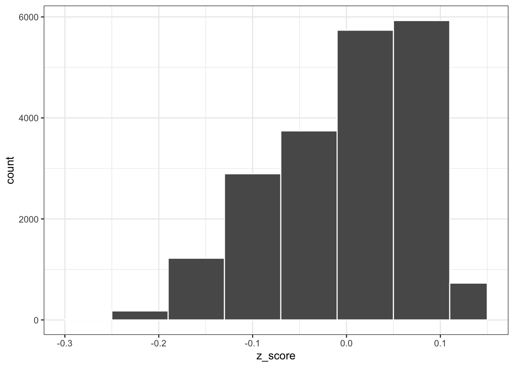
Does this look the same?
grid.arrange(figure_17, figure_19, ncol=2)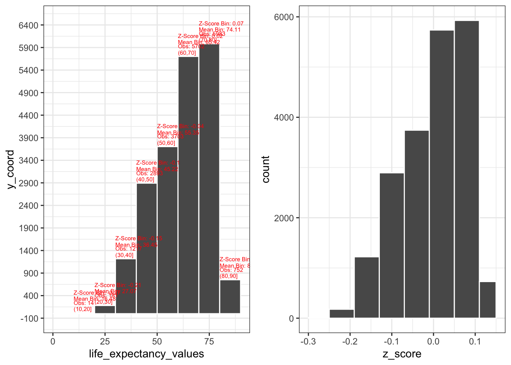
Let us add two annotations in the two graphs which clearly show the bin edges.
#Step1: Removing duplicates
labels<-subset(life_expectancy7, !duplicated(life_expectancy7$bin_indicator))
#Step2: Removing irrelevant variables
labels<-subset(labels, select = -c(Entity, Code, Year, life_expectancy_values, z_score))
#Step3: Creating the y-coordinate
labels$y_coord<-labels$observations
#Step4: Extracting the left edge of the bin
labels$x_coord<-stri_extract_first_regex(labels$bin_indicator, '\\d+([.]\\d+)?')
labels$x_coord<-as.numeric(labels$x_coord)
labels# A tibble: 8 × 7
# Groups: bin_indicator [8]
bin_indicator observations min_z_score_bin max_z_sco…¹ z_sco…² y_coord x_coord
<fct> <int> <dbl> <dbl> <chr> <int> <dbl>
1 (20,30] 181 -0.25 -0.19 (-0.25… 181 20
2 (30,40] 1217 -0.19 -0.13 (-0.19… 1217 30
3 (40,50] 2893 -0.13 -0.07 (-0.13… 2893 40
4 (50,60] 3703 -0.07 -0.01 (-0.07… 3703 50
5 (60,70] 5702 -0.01 0.05 (-0.01… 5702 60
6 (70,80] 5983 0.05 0.11 (0.05 … 5983 70
7 (80,90] 752 0.11 0.15 (0.11 … 752 80
8 (10,20] 14 -0.3 -0.25 (-0.3 … 14 10
# … with abbreviated variable names ¹max_z_score_bin, ²z_score_binfigure_20<-ggplot(data = life_expectancy7, aes(x=life_expectancy_values))+
geom_histogram(bins=10, breaks=cutpoints,
col="white")+
theme_bw()+
geom_text(data=labels,
aes(label = paste("Age Bin:\n", bin_indicator), y = y_coord, x= x_coord,
vjust = -0.5, hjust = 0), colour = "red", size=2)+
scale_y_continuous(breaks=seq(-100, 6500, by = 500), limits = c(-100, 6500))
figure_20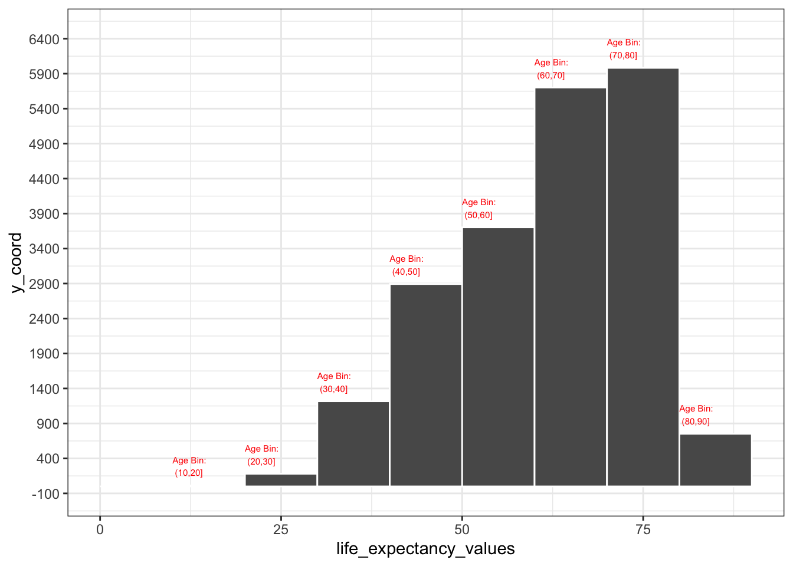
figure_21<-ggplot(data = life_expectancy7, aes(x=z_score))+
geom_histogram(bins=10, breaks=minmax_list,
col="white")+
theme_bw()+
geom_text(data=labels,
aes(label = paste("Z-Score Bin:\n", z_score_bin), y = y_coord, x= min_z_score_bin,
vjust = -0.5, hjust = 0), colour = "red", size=2)+
scale_y_continuous(breaks=seq(-100, 6500, by = 500), limits = c(-100, 6500))
figure_21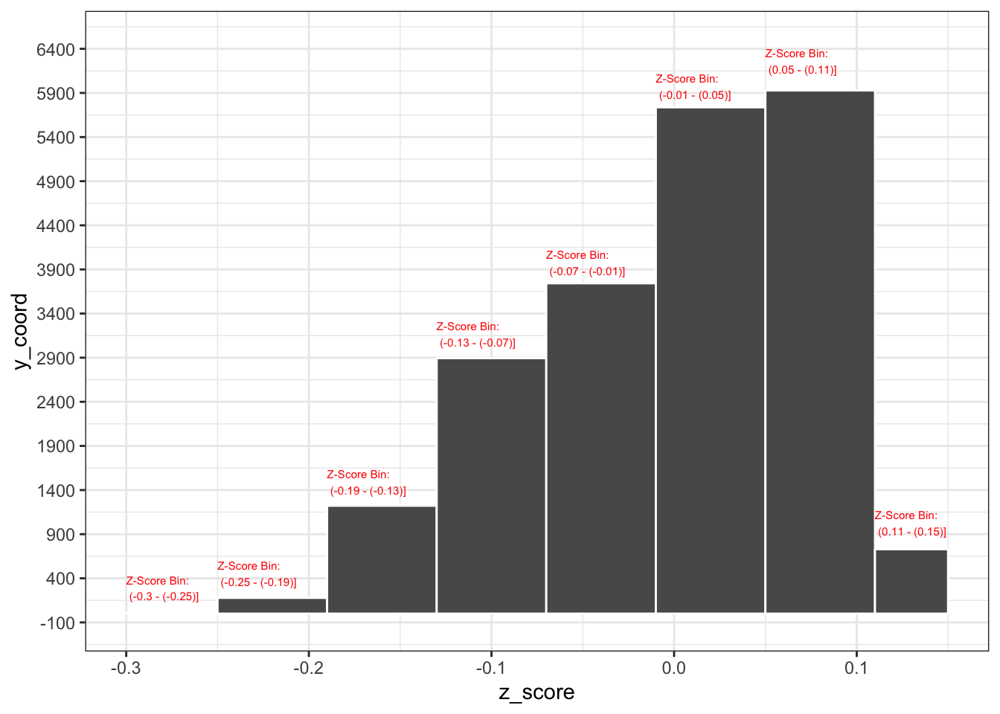
Let us finally plot them together.
grid.arrange(figure_20, figure_21, ncol=2)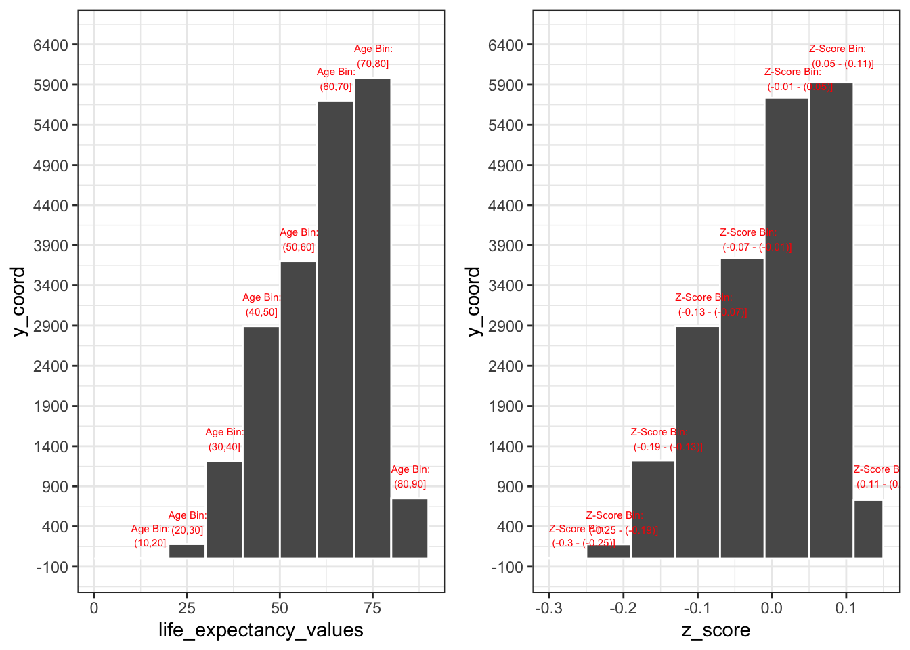
Thus, every bar in our age bin corresponds to a z-score bin. For example, our (20,30] age bin, corresponds to our (-0.25-(-0.19)] z-score bin.
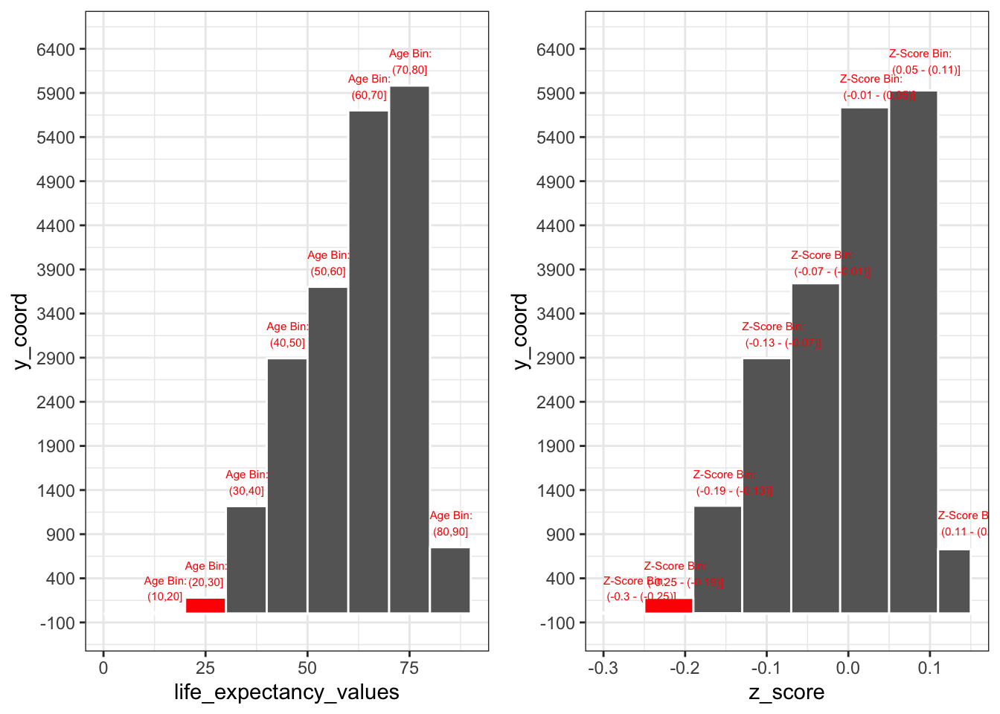
For example, our (30,40] age bin, corresponds to our (-0.19-(-0.13)] z-score bin.
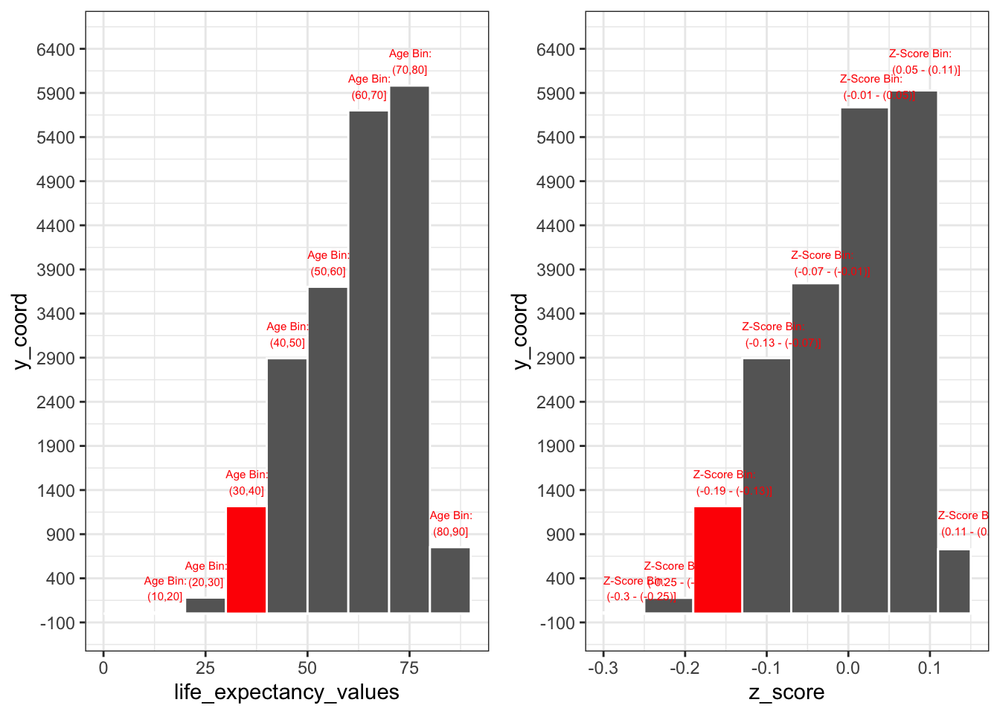
And so on and so forth.
Thus the original mean for the entire dataset, which we calculated to be 61.78 will be converted to 0, and the standard deviation 12.94 will be converted to 1, which are the two main characteristic of a standard normal distribution. This will happen to every distribution irrespective of the original mean and standard deviation.
8 Problem
Let us say that we were interested in the following problem: What is the proportion of country where the life expectancy is lower than 50?
\(P(X<50) = ?\)
We first calculate the z-score. Remember a z-score is a number representing how many standard deviations above or below the mean population the score derived from a z-test is. Essentially, it is a numerical measurement that describes a value’s relationship to the mean of a group of values.
z <-(50-mean_life_exp)/sd(life_expectancy2$life_expectancy_values, na.rm=T)
z[1] -0.911022Note that is the empirical probability.
ctry_50<-subset(life_expectancy2, life_expectancy_values<50)
nrow(ctry_50)/nrow(life_expectancy2)[1] 0.2092443Thus we need to look for the proportion of z less than -0.91.
xval<-pnorm(q=z, lower.tail=TRUE)
xval[1] 0.1811419Note that this is based on a theoretical probability.
Thus, the proportion countries where life expectancy is lower than 50 is 0.18.
9 Problem
You scored 72 in your last assignment. The class mean was 60 and standard deviation was 10. The grades follow a normal distribution. What is the probability that a randomly selected person in the class had a grade lower than yours?
The way we do that is the following:
z <-(72-60)/10
xval<-pnorm(q=z, lower.tail=TRUE)
xval[1] 0.8849303What is the probability that a randomly selected person in the class had a grade higher than yours?
1-xval[1] 0.1150697